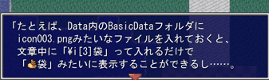
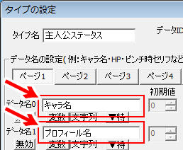

【特殊文字 一覧】
イベントや文字列ピクチャ内で使用できる特殊文字の一覧を記載します。なお、特殊文字は全て半角で入力する必要があり、大文字、小文字を区別しますのでご注意下さい。
| 【数値・文字列代入】 \v[XXX] ：XXX番の通常変数の値に置き換えます。 \v？[XXX] 予備変数？のXXX番の変数の値に置き換えます。（例：\v1[30]） \s[XXX] ：XXX番の文字列変数の値に置き換えます。 \self[X] (※Xは0〜9までの数値）： このマップイベントのセルフ変数X番の値に置き換えます。 \cself[XX] (※XXは0〜99までの数値）： このコモンイベントのセルフ変数X番の値を表示します （X=0〜4、10〜99なら数値、X=5〜9なら文字列を返す） \udb[A:B:C] (※A〜Cは数値）： ユーザDBの「タイプA番・データB番・項目C番」の内容に置き換えます。 \cdb[A:B:C] (※A〜Cは数値）： 可変DBの「タイプA番・データB番・項目C番」の内容に置き換えます。 \sdb[A:B:C] (※A〜Cは数値）： システムDBの「タイプA番・データB番・項目C番」の内容に置き換えます。 \sys[XXX] ： XXX番のシステム変数の値に置き換えます。 \sysS[XXX] ： XXX番のシステム文字列の値に置き換えます。 （2009/01/13追加） ※代入特殊文字には優先順位があり、それに従えば入れ子構造にすることも可能です。 特殊文字の優先順位は、 通常変数\v ＜ 予備変数\v? ＜ セルフ変数\self ＜ コモンセルフ\cself ＜ システム変数\sys ＜ ユーザDB \udb ＜ 可変DB\cdb ＜ システムDB \sdb ＜ 文字列変数\s ＜ システム文字列\sysS の順になっており、各特殊文字の[ ]内には、それより順位の低い特殊文字を記述することができます。 たとえば、\cself[\v[12]] （\v＜\cself）なら、\v[12]番のコモンセルフを正常に呼び出すことができます。 しかし、逆の\v[\cself[2]]は、\vより\cselfの方が順位が高いので、正常に処理されません。 ※優先順位の都合上、DB読み込み用特殊文字に関しては、変数読み込み文字を使って 「\udb[3:\v[4]:\self[1]] 」という風に入れても機能します。 ただし、\udb[\cdb[1:1:1]:2:3]（※\udb＜\cdbなのにcdbが内側に入っている）という具合に、 DB読み込み用文字の内部に優先順位の高いDB読み込み用文字を入れると 動作が不安定になりますので注意してください。 【文字の性質変化】 \f[XX] ：フォントサイズを変更します \f+[XX] ： フォントサイズを加算する \m[XX] ：その行の最大フォントサイズを指定します、行頭に入れて下さい。 文字のタテ位置がガタガタになるときに使ってください。 \c[XX] ：フォントカラーを変更します、色はシステムDBタイプ12から読み込まれます。 \E ： 以降の文字列をフチ（=エッジ,E）付きにします \wE[XX] ： 太さXXのフチ付きにする。1〜5まで有効。 \cE[XX] ： フチの色をXX番にする。色はシステムDBタイプ12から読み込まれます。 \cS[XX] ： フォントの影色をXX番にする。色はシステムDBタイプ12から読み込まれます。 \N ： 以降の文字列をフチ無し（=ノーマル,N）にします（※こちらがデフォルト状態） \-[XX] ：XXピクセル分、以降の文字幅を詰めます。 XXにマイナスの値を入れると文字が広がります。 \font[X] ：フォントをサブフォントXに変更します。\font[0]で基本フォントに戻せます。 \A+ … 以後の文字にアンチエイリアスを付与します。文字がなめらかに見えます。 \A- … 以後の文字からアンチエイリアスを解除します。 【文字表示の制御】 \\ … 半角の\に変換されます。 \! … 次のキー入力まで文章表示を停止。 \. … 0.25秒ウェイト。 \^ … キー入力を待たずに文章表示を終了する。 \> … 次以降の文章を瞬間表示する \< … \>による瞬間表示を中断する \mx[??] (※??は数値）… 次に表示する文字のX座標を、??ピクセルだけずらします。改行で解除されます。 \my[??] (※??は数値）… 次に表示する文字のY座標を、??ピクセルだけずらします。 \bx[??] (※??は数値）： 次行からの開始X座標を??ピクセルだけずらします。 \ax[??] (※??は数値）… 次に表示する文字のX座標を、強制的に??ピクセルにします。改行で解除されます。 \ay[??] (※??は数値）… 次に表示する文字のY座標を、強制的に??ピクセルにします。 同じ文字を重ねたい場合など、「■\ax[0]\ay[0]◆」と入力することで、 二つの文字を重ねることができます。 \sp[??] (※??は数値）… 以降の文字速度を秒間??文字に変更する \space[??] (※??は数値）… 以降の改行間隔を??ピクセルに変更します \r[文字,ルビ内容] … 「文字」に「ルビ内容」のルビを付けて表示する。 ルビの文字色はシステムDBタイプ12（文字色）のデータ13番目の色を使用。 \i[番号] \iS[番号]（※番号は0〜9999までの数値） … Data内のBasicDataフォルダにある 「icon番号.png」の画像を文章中に表示することができます。アイテム名の先頭に アイコンを付けたり、文章中に特殊な記号を入れたいときに使えます（Ver1.03で実装）。 ※ファイル名には、「icon002.png」のようにiconに続けて3桁、1000以上なら4桁の数値を入れてください。 ※iconファイルをBasicDataに入れてない場合は何も出ません。 ※\iSは\iと違い、拡大縮小しても常に『ガタガタ＆くっきり』になります。 ＜使用例＞  ココ↑ \img[ファイル名] （「ファイル名」はData以下のアドレスを記述） … Data内にある「ファイル名」の画像を文章中に表示することができます。 \img[ピクチャ\Test1.png]という具合に指定します（読み込まれるのはData\ピクチャ\Test1.png）。 表示時の仕様は上記のアイコン\i[ ]と同じですが、アイコンより少し処理が重い可能性があります。 ※ファイルがない場合はエラーメッセージが出るので注意してください。 ※\imgSは\imgと違い、拡大縮小しても常に『ガタガタ＆くっきり』になります。 ※「\img[」の後に「]」が出てくるとそこをファイル名の終了と判断するので、ファイル名に「]」が含まれる場合は正常に読み込むことができません。その場合は、ファイル名を変更して「]」が入らないようにしてください。 \isize[XX] 以後の画像（\i、\iS、\img、\imgS）のサイズをXX％に変えます。 <L> … 以降の文字列を左寄せ（※デフォルト）に表示します。 <C> … 以降の文字列を中央寄せに表示します。 <R> … 以降の文字列を右寄せに表示します。 |
【データベースのデータ名にのみ使用できる特殊文字】
以下は、データベース「タイプの内容設定」時の「データ名」において利用可能な特殊文字一覧です。
イベントや文字列ピクチャ内で使用できる特殊文字と多少異なる部分がありますので、注意してください。
 ←矢印の付いた欄で使用可能です
| 【数値・文字列代入】 \udb[A:B:C] (※A〜Cは数値）： ユーザDBの「タイプA番・データB番・項目C番」の内容に置き換えます。 \cdb[A:B:C] (※A〜Cは数値）： 可変DBの「タイプA番・データB番・項目C番」の内容に置き換えます。 \sdb[A:B:C] (※A〜Cは数値）： システムDBの「タイプA番・データB番・項目C番」の内容に置き換えます。 \udb[A:B](※A,Bは数値）： ユーザDBの「タイプA番・データB番」のデータID名に置き換えます。 \cdb[A:B](※A,Bは数値）： 可変DBの「タイプA番・データB番」のデータID名に置き換えます。 \sdb[A:B](※A,Bは数値）： システムDBの「タイプA番・データB番」のデータID名に置き換えます。 \d[X](※Xは数値）：データ項目の内容番号+Xの値に置き換えます。 （例えばデータ名12の入力欄に\d[4]と入れると、16になります。） ※これらDB読み込み用特殊文字に関しては、\d[X]を使って 「\udb[3:\d[0]] 」という風に入れても機能します。 ただし、\udb[\cdb[1:1:1]:2:3]という具合に、DB読み込み用文字の内部に DB読み込み用文字を入れると動作が不安定になりますので使用しないでください。 |